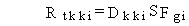
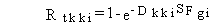
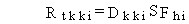
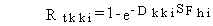

3.2 CARCINOGENIC CHEMICAL HEALTH IMPACTS
The lifetime risk of total cancer incidence is estimate
using USEPA slope factors for chemical carcinogens for inhalation and ingestion
exposure pathways. Dermal exposures are evaluated as equivalent ingestion
intakes as described in the sections on dermal absorption pathways. The
USEPA slope factors give the lifetime cancer incidence risk per average
daily dose. For ingestion exposures, the lifetime cancer incidence risk
is evaluated as follows:

(118)
where
Rtkki = risk of developing cancer from the lifetime exposure for ingestion pathway kk and chemical pollutant i (risk/lifetime)
Dkki = average daily ingestion intake for exposure pathway kk for chemical pollutant i (mg/kg/d)
SFgi = ingestion slope factor for cancer incidence risk for chemical pollutant i (risk per mg/kg/d ingestion intake).
When the risk value estimated using Equation (118) is greater than 0.01,
the value must be revised using the following equation, which mathematically
limits the maximum risk value to 1.0:

(119)
where terms are as previously defined.
Inhalation lifetime cancer incidence risk is evaluated similarly, as follows:

(120)
where
Rtkki = risk of developing cancer from the lifetime exposure for inhalation pathway kk and chemical pollutant i (risk/lifetime)
Dkki = average daily inhalation intake for exposure pathway kk for chemical pollutant i (mg/kg/d)
SFhi = inhalation slope factor for cancer incidence risk for chemical pollutant i (risk per mg/kg/d inhalation intake).
When the inhalation risk is greater than 0.01, Equation (120) is used to
mathematically limit the risk to a maximum value of 1.0, as follows:

(121)
where terms are as previously defined.